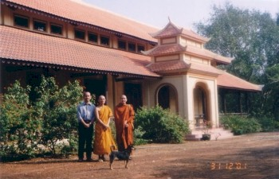
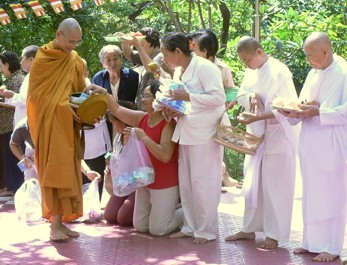

|
|
BuddhaSasana Home Page |
Vietnamese, with Unicode Times font |
Chùa Bửu Long
81 đường Nguyễn Xiển, Tổ 1, Ấp Thái Bình 1,
Phường Long Bình, Quận 9, TP HCM
-ooOoo-
|
 |
|
|
Tháp Ngài Hộ Tông |
Tháp Ngài Lão Tâm |
Source: Bình Anson, 12-2002
Source: Võ Văn Tường, "Những Ngôi Chùa Nổi Tiếng Việt Nam", Hà Nội, 1994
|
Tượng Ngài Hộ Tông |
|
|
Tịnh thất Ngài Hộ Tông |
|
Source: Bình Anson, 11-2003
|
|
Source: Diệu Định (05-2004)
|  |
Tỳ khưu Viên Minh |
Lễ Dâng Y Kathina 2005
(Photos: Tỳ khưu Tuệ Lực & Phạm Lực, 11-2005)
 |
Photos: Bình Anson (02-2006)
|
A. Vài nét về nguồn gốc và sinh hoạt Tổ Đình Bửu LongTổ Đình Bửu Long, toạ lạc trên một ngọn đồi phía nam thuộc Công Viên Lịch Sử và Văn Hoá Dân Tộc, số 81, Đường Nguyễn Xiển, Tổ I, Ấp Thái Bình I, phường Long Bình, Quận 9, Thành phố Hồ Chí Minh, thuộc hệ phái Phật Giáo Nguyên Thủy (Nam Tông) trong Giáo Hội Phật Giáo Việt Nam. Nguyên khu đất này, khoảng 13 ha, do cư sĩ Võ Hà Thuật mua lại và khai khẩn thêm từ năm 1942 để làm tịnh thất hành thiền dưới sự hướng dẫn của thầy là thiền sư Hộ Tông, vị tổ khai sơn Phật Giáo Nguyên Thủy Việt Nam. Để tiện việc tham vấn, cư sĩ V õ Hà Thuật xây dựng một thiền thất trên một vị trí cao ráo để thỉnh thiền sư Hộ Tông về dạy thiền giảng đạo. Từ đó nơi đây trở thành một đạo tràng hành thiền chỉ quán rất nghiêm mật cho những ai ưa thích pháp hành giải thoát.Năm 1958, khi Giáo Hội Tăng Già Nguyên Thủy Việt Nam đã được chính thức thành lập, thiền sư Hộ Tông được chư tăng tôn thỉnh đảm nhiệm chức vụ Tăng Thống Ban Chưởng Quản Giáo Hội Tăng Già Nguyên Thủy Việt Nam. Công tác Phật sự của Giáo Hội vào thời kỳ "khởi đầu nan” này rất đa đoan, phức tạp, trong khi Đức Tăng Thống vốn là một thiền sư đã quen nếp sống độc cư thanh tịnh nên Ngài đã về xây dựng Bửu Long thành một thiền viện có không khí của những rừng thiền rất thịnh hành ở các nước Phật giáo Nam Tông như Thái Lan, Miến Điện. Từ đó thiền viện Bửu Long đã qui tụ nhiều hành giả đến tham thiền học đạo. Nhiều am thất của chư Tăng, tu nữ và tịnh nhân đã được xây dựng để đáp ứng nhu cầu hành thiền của đại chúng. Năm 1961, Đức Tăng Thống Phật Giáo Sri-Lanka là Ngài Narada đến thăm Việt Nam đã tặng cho thiền viện Bửu Long một cây Bồ Đề có nguồn gốc từ cây Bồ Đề nơi Đức Phật thành đạo. Nhị vị Tăng thống đã đồng chưởng hạ cây Bồ Đề tại một địa điểm cao nhất trong khuôn viên thiền viện. Ngày nay khách hành hương đến tham quan có thể thấy cây Bồ Đề đã được bao đời trụ trì chăm sóc vun quén trở thành một đại thọ sum sê che bóng Phật Đài cùng với những phù điêu khắc chạm trên đá mô tả tám sự tích Phật lực, phản ánh văn hoá Phật Giáo Nam Tông. Năm 1965 cư sĩ Võ Hà Thuật chính thức được thiền sư Hộ Tông truyền thọ đại giới, pháp danh là Lão Tâm, và được Hoà Thượng Viện chủ giao cho quản lý thiền viện. Năm 1969 Đại Đức Lão Tâm tịch, Hoà Thượng giao lại cho Đại Đức Ngự Tâm trụ trì. Năm 1976 Đại Đức Ngự Tâm qua đời, Đại Đức Tăng Huệ thay thế. Năm 1981 Hoà Thượng Viện chủ tức là Tổ Hộ tông viên tịch sau khi đã di chúc lại cho Thượng Toạ Viên Minh thay thế Ngài điều hành Phật sự tại thiền viện Bửu Long. Lúc bấy giờ vì Thượng Toạ Viên Minh đang giữ chức vụ Tổng Thư Ký Giáo Hội Tăng Già Nguyên Thủy Việt Nam kiêm phó trụ trì chùa Kỳ Viên, trụ sở Giáo hội, chưa thể về nhậm chức được nên đã cử Đại Đức Bửu Đức thay thế. Đến năm 1992 Đại Đức Bửu Đức đi du học nước ngoài Thượng Toạ Viên Minh mới chính thức về đảm nhiệm chức vụ mà Tổ giao phó. Thiền Viện Bửu Long đã được trở thành Tổ Đình vì là ngôi chùa do Tổ Hộ Tông thành lập, nơi mà Tổ đã tịnh cư gần 30 năm để hành đạo và hoằng dương độ chúng, và cũng là nơi mà Ngài đã an nhiên thị tịch. Hiện nay tháp thờ Xá Lợi của Tổ toạ lạc ngay sau Bồ Đề Phật Cảnh, nơi mà hàng năm vào ngày 26 tháng 7 Âm lịch, chư Tăng, Tu nữ và Phật tử Nam Tông trong cả nước qui tụ về để hành hương chiêm bái và làm lễ tưởng niệm đến vị Tổ khai sơn Phật Giáo Nguyên Thủy Việt Nam. Để giữ truyền thống sinh hoạt thiền viện xưa của Tổ, h àng tuần Thượng Tọa Viên Minh đã tổ chức lại lớp học và hành thiền trọn ngày thứ Bảy cho Tín đồ Phật tử gần xa đến tham vấn và hành trì. Bình thường, hàng ngày chư Tăng, Tu nữ có hai thời công phu tụng kinh, tọa thiền vào 4 giờ 30 sáng và chiều. Riêng mùa An Cư Kiết Hạ hàng năm, chùa tổ chức khóa thiền tích cực trọn ba tháng cho Tăng Ni và Phật tử tùng hạ tu tập. Đặc biệt là chư Tăng tại Tổ đình giữ hạnh trì bình khất thực. Đúng 10 giờ 30 khi chư Tăng đi khất thực thì các thí chủ đã chuẩn bị sẵn vật thực để cúng dường, sau đó chư Tăng tụng kinh phúc chúc, chú nguyện cho thí chủ rồi trở về thất thọ thực trước giờ ngọ.Ngoài việc tu học chùa cũng quan tâm đến công tác từ thiện xã hội nên đã thành lập một Ban Từ Thiện (xem thêm báo cáo đính kèm) và một chi hội Chữ Thập Đỏ hoạt động rất tích cực trong các công tác cứu trợ thiên tai, giúp đỡ các trại phong, dưỡng lão, cô nhi, trẻ em khuyết tật, mổ mắt nhân đạo, xây nhà tình thương, cấp học bổng cho học sinh nghèo và tài trợ thường xuyên cho một số cụ già neo đơn không nơi nương tựa. Từ khi có quyết định thành lập Công Viên Lịch Sử và Văn Hoá Dân Tộc, Tổ Đình Bửu Long đã được chính phủ công nhận và giữ lại trong công viên vì tính chất lịch sử tiêu biểu cho nền văn hoá Phật Giáo Nguyên Thủy Việt Nam. Do đó Thượng Toạ Viên Minh đã nỗ lực trùng tu tôn tạo và xây dựng ngôi Tổ Đình ngày thêm phong phú với những kiến trúc vừa phù hợp với bản sắc dân tộc, vừa phản ánh được tính đặc thù của Phật Giáo Nguyên Thủy Việt Nam. Hiện nay Tổ Đình đã có 1 chánh điện, 1 tăng xá, 1 trai đường, 1 tăng khách đường, 1 tổ đường, 5 thiền thất của chư Tăng, 1 ni viện, 1 ni xá và 25 am thất của Tu nữ, tịnh nhân. Ngoài ra còn có một động khổ hạnh tưởng niệm 6 năm Bồ Tát tu khổ hạnh và một Bồ Đề Phật Cảnh tưởng niệm ngày Đức Phật thành đạo. Tương lai Tổ Đình có dự án xây dựng Bảo Tháp, nhà Bảo Tàng Lịch Sử Văn Hoá Phật Giáo Nam Tông, hang động Bồ Tát khổ hạnh, đền thờ thánh Sìvali v.v... để xứng đáng là một hạng mục trong công viên lịch sử và văn hoá của Thành phố Hồ Chí Minh. Những ngày lễ lớn của Tổ Đình : 1) Lễ Thánh Hội và Phật Hứa Ma Vương: ngày Rằm tháng Giêng ÂL. B. Tiểu sử cố Đại Lão Hòa Thượng Hộ Tông,Khai Tổ Phật Giáo Nguyên Thủy Việt Nam. (1893-1981) Cố Đại Lão Hòa Thượng Hộ Tông, thế danh Lê Văn Giảng, con cụ ông Lê Văn Nhu và cụ bà Đinh Thị Giêng, sinh năm 1893 tại làng Tân An, Huyện Tân Châu, Tỉnh Châu Đốc. Ngài trưởng thành và lập nghiệp tại xứ Kampuchia. Mặc dù là một công chức uy tín, một bác sĩ tài năng mà đường công danh đang mở ra rạng rỡ, nhưng dường như vốn có túc duyên với Đạo nên ngài thấy công danh chỉ là ảo ảnh, hạnh phúc chẳng khác mây sương, ngài thường tự nhủ: "Đường thế mịt mù trăm
năm đầy tội Đến năm 32 tuổi nhờ có những linh thị nhiệm mầu thức tỉnh , ngài quyết thoát ly những cám dỗ trần tục và phát tâm tìm đạo.Nhưng thấy ra ảo ảnh cõi trần là một việc, còn tìm ra được con đường chơn chánh để thoát ly cuộc đời mộng huyễn là một việc hoàn toàn khác. Ngài đã thử qua nhiều pháp môn tu tập như niệm kinh, trì chú, ăn chay, nhịn đói, luyện đơn, khổ hạnh, v.v… với tất cả nỗ lực chuyên cần của một người cư sĩ tại gia, nhưng ngài sớm nhận ra rằng đó cũng chỉ là ảo ảnh như chính ảo ảnh cuộc đời mà trước đây ngài đã thấy. May sẵn có căn duyên cụ túc, tâm đạo chuyên trì, ý chí kiên định, ngài đã vượt qua mọi thử thách cam go trên đường tìm đạo, cuối cùng ngài đã gõ đúng cửa chánh pháp. Một vị chơn sư đã chỉ bày cho ngài Phật Giáo Nguyên Thủy. Như được uống nước tận nguồn, tâm tánh mở khai, trí tuệ thông suốt, ngài đã liễu ngộ được Bốn Sự Thật. Con đường Bát Chánh mở ra trước mắt như một thông lộ giải thoát tuyệt vời. Từ đó ngài chuyên tâm thực hành hạnh bố thí, trì giới, tham thiền. Ngài cúng dường đến hàng ngàn Tăng chúng, xây dựng trường Phật học, trùng tu chùa, tháp, Tăng đường, tạo lập liêu, thất, tịnh xá trong rừng sâu cho các vị thọ hạnh đầu đà chuyên tu thiền quán. Và chính ngài, mặc dù còn là một cư sĩ tại gia, có gia đình, với 6 người con, đã nổi tiếng về phương diện hành thiền. Gặp được Chánh Pháp, ngài phấn khởi khuyến khích bạn bè thân hữu cùng nhau tu tập. Ngài lập chùa Sùng Phước tại Kampuchea để hướng dẫn Việt kiều thọ trì Bát Quan Trai Giới. Bấy giờ chư Tăng và thiện tín gọi ngài là A-cha Giảng với lòng mến mộ biết ơn. Chùa dần dần có đông chư Tăng và thiện tín Ngài bắt đầu dịch kinh sách ra tiếng Việt, trong đó Kinh Nhựt Hành cư sĩ, Kinh Tụng Chư Tăng và bộ Luật Xuất Gia là những dịch phẩm đầu tiên vô cùng quý giá. Khoảng thập niên 1930 Ngài và một số đạo hữu uyên thâm đạo lý như cụ Nguyễn Văn Hiểu thường về Sài Gòn thuyết giảng, nhờ thế đã quy tụ đông đảo Phật tử hướng về giáo lý uyên nguyên của Đức Phật. Một ngôi chùa Phật Giáo Nguyên Thủy đầu tiên tại Việt Nam đã được thành lập năm 1941 tại Gò Dưa, Thủ Đức, đó là chùa Tổ Đình Bửu Quang ngày nay. Cũng trong năm đó, nhận thấy đã đến lúc không còn thích hợp với đời sống tại gia mà Đức Phật gọi là "dễ lấm bụi trần", ngài đã quyết chí xuất gia, chọn đời sống “không gia đình trắng bạch như vỏ ốc" để có thể chuyên tâm thiền quán. Rằm tháng 10 năm 1941 ngài đã thọ đại giới với Đức Vua Sãi Chun Nat. Đức Vua S ãi nhận ra người đệ tử mới xuất gia của mình là bậc pháp khí có thể lãnh trọng trách Như Lai sứ giả, nên không ngần ngại giao phó cho ngài sứ mạng truyền trao Chánh Pháp Nguyên Thủy về xứ Việt Nam, và chính tại Chùa Bửu Quang ngài đã khai pháp hội đầu tiên để thắp lên ngọn đuốc chân lý rọi soi vào lòng người dân Việt.Được thấm nhuần pháp vũ, chẳng bao lâu sau ng ài về nước mở đạo chư Tăng và tín đồ Phật Giáo Nguyên Thủy Việt Nam ngày càng xương thịnh. Năm 1958 ngài cùng với Hòa Thượng Thiện Luật, Hòa Thượng Bửu Chơn, Hòa Thượng Tịnh Sự, Pháp Sư Thông Kham và nhiều vị cao tăng tài đức khác đã đứng ra thành lập Giáo Hội Tăng Già Nguyên Thủy Việt Nam. Ngài được tôn cử chức vụ Tăng Thống đầu tiên của Ban Chưởng Quản Giáo Hội.Chánh Pháp đã được lan truyền, nhiều ngôi chùa và tịnh xá đã được xây dựng, ngài cùng với chư tôn Hòa Thượng được sự ủng hộ của đông đảo tín đồ, nhất là cụ Nguyễn Văn Hiểu đã thành lập các chùa như: Kỳ Viên, Bàn Cờ năm 1947; Giác Quang, Chợ Lớn 1950; Tam Bảo, Đà Nẵng 1953; Pháp Quang, Gia Định 1958; Bửu Long, Thủ Đức và Tăng Quang, Huế 1959; Định Quang, Phi Nôm 1963; Bồ Đề, Vũng Tàu 1969; Nguyên Thủy, Cát Lái 1970. Đến năm 80 tuổi, ng ài vẫn được chư Tăng thỉnh cầu đảm nhiệm chức vụ Tăng Thống 2 nhiệm kỳ từ năm 1971 đến năm 1974, và ngài đã giữ vững con thuyền giáo hội giữa cơn phong ba bão táp của thời cuộc lúc bấy giờ.Cũng nên nhấn mạnh rằng việc du nhập Phật Giáo Nguyên Thủy vào Việt Nam là một công đức to lớn: - Về phương diện tín ngưỡng, Phật Giáo Nguyên Thủy đã mở ra một chân trời mới trong tư tưởng Phật học Việt Nam. - Về phương diện văn hóa, Phật Giáo Nguyên Thủy đã đóng góp cho nước nhà kho tàng trí tuệ của một vị Phật lịch sử. Nhưng việc truyền bá Phật Giáo Nguyên Thủy tại Việt Nam ngay từ đầu đã gặp phải những trở ngại lớn lao: - Một là sự chống đối mãnh liệt của các hệ phái Phật Giáo cổ truyền ảnh hưởng màu sắc Trung Hoa. - Hai là thời kỳ chiến tranh nóng bỏng tại Đông Dương từ năm 1945. - Ba là tình trạng chia cắt đất nước năm 1954 đã giới hạn con đường hoằng pháp. - Bốn là chính sách kỳ thị tôn giáo dưới thời Ngô Đình Diệm. Kiên trì vượt qua những trở ngại như thế đòi hỏi phải có một hạnh nguyện xả kỷ độ sinh, một lòng từ bi vô ngại, một trí tuệ thâm uyên và một tâm hồn đại hùng đại lực của vị Bồ Tát như ngài đã phát nguyện. Nhưng "Công thành thân thoái" là hành xử của bậc thiện trí. Hơn nữa ngài đã thấy hễ "Thiên địa bỉ” thì "Hiền nhân ẩn", nên sau 80 tuổi ngài lui về ẩn cư tại chùa Bửu Long, ngôi chùa do chính ngài lập ra và cũng tại đây ngài đã để lại biết bao kỷ niệm cuối cùng trước khi viên tịch. Một tuần trước khi ra đi, hằng đêm ngài thấy chư thiên hào quang chiếu sáng chung quanh cốc, ngài nói với các đệ tử: “Ta sắp ra đi, và đang cảm thấy thanh thoát lạ thường, lẽ đời có sinh có diệt, các con nhớ tinh tấn tu hành." Biết trước giờ tịch diệt sau khi sắp đặt mọi Phật sự cho Tăng Chúng và Ni Chúng trong chùa, ngài viết di chúc gởi Giáo hội để chọn người thừa kế, đồng thời ngài cúng dường tứ sự đến chư Tăng tại 33 ngôi chùa Phật Giáo Nguyên Thủy, tổ chức trai tăng, để bát, thuyết pháp 7 ngày tại Bồ Đề Phật Cảnh... cho đến lúc 16 giờ 45 phút ngày 26 tháng 7 năm Tân Dậu (nhằm thứ Ba, ngày 25 tháng 8 năm 1981) ngài đã an nhiên thị tịch, hưởng thọ 88 tuổi. Trước khi thị tịch, ngài rất trầm tĩnh sáng suốt, giảng giải cặn kẽ về thiền An-ban sổ tức cho hàng đệ tử, và nhắc lại lời Đức Phật “An trú hơi thở là an trú của các bậc thánh", rồi ngài trút hơi thở cuối cùng với một nụ cười điểm trên nét mặt bình an tươi tỉnh. Lễ Trà Tỳ được cử hành một cách đơn giản, theo lời di chúc của ngài, vào lúc 9 giờ ngày 29 tháng 7 Tân Dậu (thứ Sáu ngày 28-8-1981) tại hỏa đài chùa Bửu Long. Đặc biệt không hẹn mà chư Tăng về dự lễ Trà Tỳ đúng với số tuổi của ngài là 88 vị. Kim quang được cung tống đến hỏa đài với sự hiện diện của đông đảo tín đồ, kính thành cầu nguyện trong không khí vô cùng trang nghiêm và xúc động. "Người đi còn lại nụ cười Để kết thúc tiểu sử sơ lược nầy, xin n êu lên những đức tính ưu việt của ngài mà các vị đồng phạm hạnh thường hết lòng ca ngợi:1 – Ngay thẳng bộc trực không thiên vị. Với những công hạnh trên ngài quả xứng đáng là Vị Tổ khai sơn Phật Giáo Nguyên Thủy Việt Nam vậy. Thơ Khuyến Tu ĐƯỜNG trần sao lắm cuộc bi ai THẾ sự khác nào chốn chông gai MỊT mịt hơi sầu vòng gác tía MÙ mù gió thảm vẻ cân đai TRĂM lo nghìn liệu gây oan trái NĂM mỏi tháng mòi vướng nghiệp tai ĐẦY đủ phước hồng rồi cũng bỏ TỘI trường oan trái khổ liền tay CỬA Phật tháng ngày chẳng thảm ai THIỀN môn nào phải chốn chông gai THANH sơn đâu quản khanh cùng tướng TỊNH thất nào hay mão với đai MUÔN thuở an vui hành Bát Chánh KIẾP trần thong thả lánh tam tai NÊN chăng hỡi khách công hầu gẫm DUYÊN kết Niết Bàn được rảnh tay. Những kinh sách do ngài Hòa Thượng Hộ Tông dịch thuật hoặc biên soạn: Kinh Nhật Hành Cư Sĩ. C. TIỂU SỬ CỐ ĐẠI ĐỨC LÃO TÂM(1901-1969) Đại Đức L ão Tâm, thế danh là Võ Hà Thuật, sinh ngày 02-04-1901 tại xã Bửu Long, Biên Hòa, Tỉnh Đồng Nai. Thân phụ là cụ Đốc Phủ Sứ Võ Hà Thanh và thân mẫu là cụ bà Nguyễn Thị Ngạt.Xuất thân từ dòng dõi trâm anh thế phiệt, có nề nếp gia phong, tuy giàu có tột đỉnh nhưng không kiêu căng khắc bạc mà lại trọng điều nhân nghĩa, quý bậc hiền tài, giúp đỡ người nghèo, tuân theo đạo lý. Cho nên khi còn là cư sĩ tại gia ông đã sớm thành danh trên đường đời, cả về mặt sự nghiệp lẫn việc xây dựng một gia đình hạnh phúc bên người vợ hiền là bà Trương Thiêm Hoa cùng với 5 người con trai trung hiếu và 1 người con gái hiền thục. Mặc dầu có một đời sống trưởng giả phú túc, mặc dù có một gia đình hạnh phúc đầm ấm và mặc dù đã làm đến chức Hội Đồng Địa Hạt Tỉnh Biên Hòa, ông vẫn là người có túc duyên với Đạo, nên sớm chán cảnh vinh nhạt mùi phú quý, thích sống đời sống tĩnh mịch đạm bạc. Chính nhờ vậy mà ngay từ buổi đầu Phật Giáo Nguyên Thủy mới hoằng hóa vào vùng Sai Gòn, Gia Định, ông đã đen quy y học đạo với ngài Hộ Tông tại ngôi chùa Bửu Quang, trung tâm hoằng pháp đầu tiên của Phật Giáo Nguyên Thủy tại Gò Dưa, Thủ Đức. Trước kia ông theo Tịnh Độ Tông và hành pháp môn trì trai niệm Phật. Nhưng từ khi gặp Phật Giáo Nguyên Thủy, được tổ Hộ Tông truyền dạy pháp thiền, như gặp được thuận duyên ông quyết tâm đi theo con đường chỉ quán song tu trong pháp môn Tứ Niệm Xứ. Tìm được hướng đi, năm 1942 ông quyết tâm từ bỏ mọi vinh hoa phú quý, một mình qua Thủ Đức (nay là Quận 9) chọn mua lại một phần ngọn đồi tại ấp Thái Bình xã Long Bình để lập tịnh thất vui thú điền viên, sớm hôm tu dưỡng. Năm 1958 khi Giáo Hội Tăng Già Nguyên Thủy Việt Nam được chính thức thành lập, ông đã hoan hỷ dâng cúng toàn bộ khu tịnh viên của mình lên giáo hội để xây dựng thành một cơ sở hành thiền. Năm 1959, tịnh thất của ông đã được Đức Tăng Thống Giáo Hội là Hòa Thượng Hộ Tông chính thức lập thành thiền viện Bửu Long. Phấn khởi trước sự kiện trọng đại nầy, ông đã nhiệt thành xây dựng một ngôi thiền thất dâng cúng đến Đức Tăng Thống để Ngài tịnh cư hành đạo và hướng dẫn đồ chúng. Ngay trong khóa thiền đầu tiên tổ chức tại thiền viện, ông đã đắc pháp dưới sự hướng dẫn trực tiếp của Tổ Hộ Tông. Từ đó ông vừa là hành giả xuất sắc vừa là người đứng ra bảo trợ cho sinh hoạt của thiền viện. Năm 1961, ngài Nàrada, Tăng Thống Phật Giáo Tích Lan, đã đích thân đến tặng cho thiền viện Bửu Long một cây Bồ-đề có nguồn gốc từ cây mẹ ở Bồ-đề Đạo Tràng, và sau khi được ngài Viện Chủ (tức Tổ Hộ Tông) chưởng hạ, ông đã tự tay vun trồng chăm sóc cho đến khi cây Bồ-đề sum sê xanh tốt. Thấy ông đã đắc pháp, lại có đức tính cần cù, phục vụ, giản dị, khiêm cung như vậy, một hôm Tổ gọi ông vào thiền thất gợi ý: "Chư pháp vốn không, nhưng nếu biết dụng thì tướng cũng có thể lợi lạc quần sanh, ông thấy thế nào?". Chẳng ngờ bấy lâu đã thấm nhuần thiền vị, trí tuệ linh thông, ông biết ngay là Tổ dạy mình nên dụng hình thức xuất gia để thể hiện hữu hiệu hơn hạnh nguyện tự giác giác tha của một Như Lai sứ giả, liền sụp lạy và xin Tổ từ bi thế pháp. Tổ mỉm cười biết ông là pháp khí liền cho xuống tóc xuất gia. Sau một thời gian thử thách dưới hình thức Sa Di, ngày 7-11-1965 ông được ngài Hộ Tông truyền thọ đại giới, từ đó có pháp danh là Đại Đức Lão Tâm, một vị Tăng tu hành nghiêm túc, có nhiều phẩm hạnh. Mặc dù mới xuất gia, nhưng là bậc lão thành, lại có phẩm hạnh như vậy, nên chẳng bao lâu, vì bận vân du hoằng pháp đó đây, ngài Hộ Tông đã cử Đại Đức làm trụ trì chùa Bửu Long để đảm trách sinh hoạt tăng chúng. Như vậy Đại Đức là vị trụ trì đầu tiên sau Ngài Viện Chủ. Những công đức cao quý mà Đại Đức đã làm, không những lợi ích cho bản thân mà còn để đức cho con cháu hưởng phước lâu dài, và hơn thế nữa, đã lưu truyền cho hậu thế có chỗ tu hành, có nơi hoằng đạo. Ngày 21 tháng 11 năm Kỷ Dậu (1969), Đại Đức đã an nhiên thị tịch, để lại cho gia quyến, bạn bè, chư tăng và thiện nam tín nữ một niềm thương tiếc vô biên, mãi mãi nhớ ơn một người thí chủ có nhiều công đức, một vị tăng có nhiều đạo hạnh. -ooOoo- |
[Hình
ảnh Phật giáo][Thư Mục]
last updated: 11-04-2006